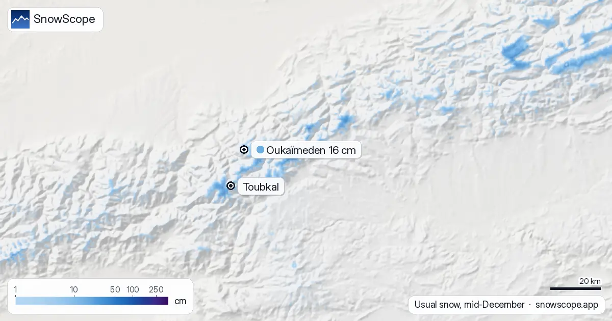

¿Es diciembre demasiado pronto para esquiar en el Alto Atlas?
Sí, la mayoría de las veces, diciembre es pronto en el Alto Atlas. Según nuestro histórico de 46 inviernos, la media montaña de Oukaïmeden tiene 18 cm de nieve en un diciembre típico, frente a 53 cm en marzo, su mes con más nieve. Pero pronto no significa imposible.
Consulta la previsión de nieve en tiempo real de Oukaimden ski resort en la app SnowScopeEspesor de nieve, alertas de nieve polvo y mapa 3D, gratis.La escala de los meses
En la media montaña, hacia los 2929 m, el espesor de nieve mensual típico sube despacio: 3 cm en noviembre, 18 cm en diciembre, 28 cm en enero, 44 cm en febrero y 53 cm en marzo, antes de bajar de nuevo a 11 cm en abril. En la cima, a 3258 m, es 20 cm en diciembre, 31 cm en enero, 50 cm en febrero y 58 cm en marzo.
Diciembre se sitúa por tanto a un tercio del camino. El pico de un invierno típico alcanza los 92 cm en la media montaña, pero casi siempre después de enero.

Por qué el Atlas empieza tarde
Aquí la nieve no se acumula en capas regulares como en los Alpes. Llega con pocas tormentas grandes, a menudo separadas por largos periodos secos y soleados que la derriten o la transforman. Un diciembre puede recibir una buena nevada y luego perder la mitad de su nieve antes de Navidad.
Las cifras lo muestran: el 15 de diciembre, el 20 % de los inviernos tiene la media montaña casi desnuda, mientras que un diciembre generoso, uno de cada diez inviernos, tiene allí 50 cm.

La mejor semana, en cifras
En nuestros 46 inviernos, la semana más segura en la media montaña es la semana 9, a finales de febrero: el 59 % de los inviernos tiene allí una nieve media de al menos 50 cm, para una altura típica de 59 cm. En diciembre, esa misma proporción nunca supera el 13 % en ninguna semana.
El número de días con nieve en el suelo es de 138 en un invierno típico: la nieve está presente mucho tiempo, pero es fina al principio.
Entonces, ¿diciembre o no?
Si solo puedes ir en diciembre, elige la segunda quincena y espera una nevada: el 31 de diciembre, el 48 % de los inviernos tiene al menos 25 cm en la media montaña. Si tienes elección, febrero y marzo son claramente mejores. El invierno pasado mostró las dos caras: una Navidad de 2025 con 78 cm en la media montaña, un invierno que terminó en 132 cm.
Consejos para esquiadores
- Para un viaje planeado con mucha antelación, apunta a finales de febrero o marzo.
- Para diciembre, mantén la flexibilidad: sal después de una tormenta, no en una fecha fija.
- Sigue nuestro mapa y la previsión a dos semanas antes de reservar el transporte.
- Nieve fina de inicio de temporada: cuidado con las rocas bajo la superficie, quédate en las pistas pisadas.
Referencias y créditos
- Wikipedia, Oukaïmeden (read 13 November 2026) en.wikipedia.org/wiki/Ouka%C3%AFmeden
- OpenSkiMap (mapped lifts and runs) openskimap.org/
Sobre estas cifras
Cifras de nieve: histórico de nieve de SnowScope, 46 inviernos pasados (1980-81 a 2025-26) en las alturas indicadas (base, media, cima), una reconstrucción de la nieve pasada para una zona corregida por altitud (basada en ERA5-Land; Snow_Hydro 1 km para Marruecos), no los partes de la estación. Nieve actual: el mapa de SnowScope. Remontes, pistas y alturas: cartografía OpenSkiMap. Precios: las páginas oficiales listadas abajo, consultadas el 13 de noviembre de 2026; los precios dinámicos cambian con la fecha y la demanda.
Citar este informe
Para investigación, docencia o prensa: cifras y gráficos reutilizables libremente bajo CC BY 4.0 con esta cita.
SnowScope (2026), ¿Es diciembre demasiado pronto para esquiar en el Alto Atlas?, https://snowscope.app/blog/es/2026/11/decembre-trop-tot-pour-skier-haut-atlas.html, consultado el 2026-11-14
SnowScope (Atlas Labs). (2026, November 14). ¿Es diciembre demasiado pronto para esquiar en el Alto Atlas?. SnowScope snow reports. https://snowscope.app/blog/es/2026/11/decembre-trop-tot-pour-skier-haut-atlas.html
BibTeX
@misc{snowscope2026decembretroptotpourskier,
author = {{SnowScope (Atlas Labs)}},
title = {¿Es diciembre demasiado pronto para esquiar en el Alto Atlas?},
year = {2026},
month = nov,
howpublished = {\url{https://snowscope.app/blog/es/2026/11/decembre-trop-tot-pour-skier-haut-atlas.html}},
note = {Published 2026-11-14 13:29 UTC; accessed 2026-11-14}
}· CC BY 4.0 · Métodos, datos y herramientas →
Sigue Oukaimden ski resort
Gratis: un aviso cuando llega la nieve y la previsión cada mañana.
Más partes de nieve

Todavía sin nieve en Oukaïmeden: 0 cm en las tres alturas, nada en los últimos siete días, nada en la semana que viene. Lo que trae un noviembre habitual al Alto Atlas y cuándo apuntar al esquí.

Un cuaderno práctico sobre Oukaïmeden, en el Alto Atlas: cuándo suele llegar la nieve, cuánta, qué laderas elegir y cómo llegar desde Marrakech.

Les 3 Vallées: 75,70 € al día del 5 al 18 de diciembre de 2026. Oukaïmeden: sin tarifa oficial online, 16 cm en la media montaña a mediados de diciembre. La comparación honesta.